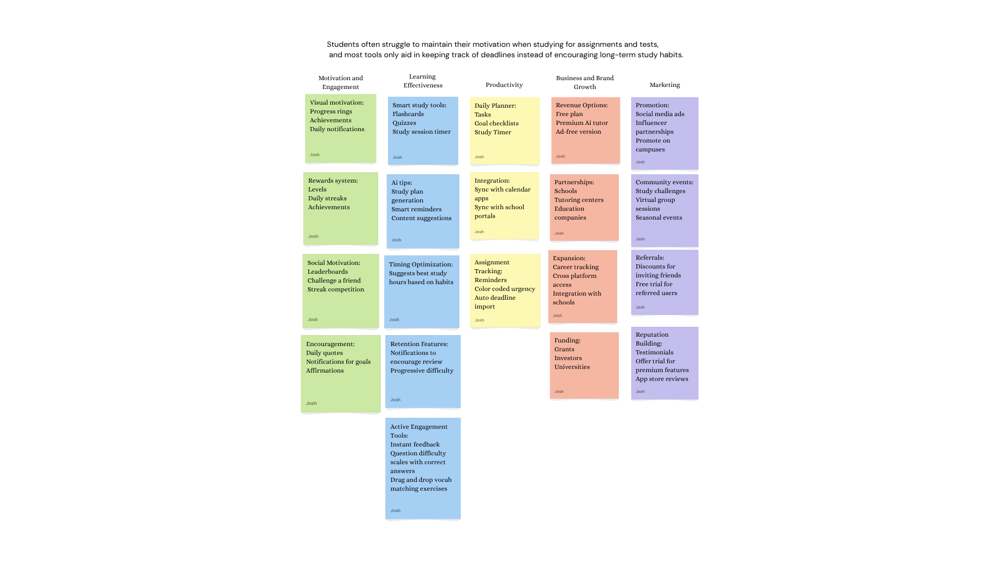
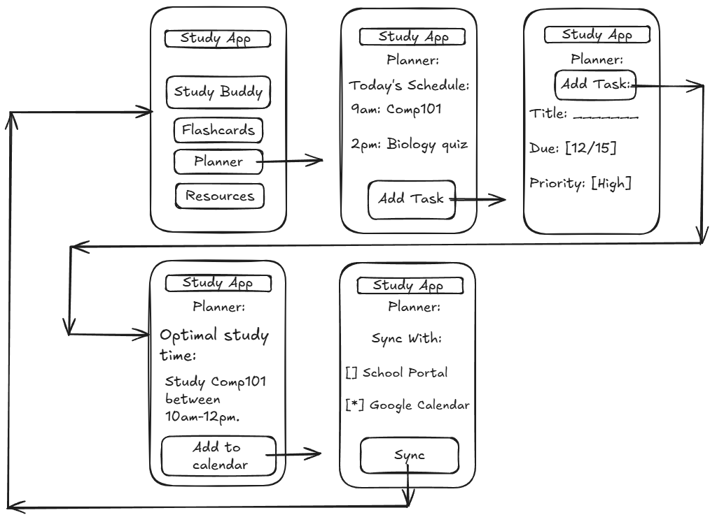

Problem Statement

Students often struggle to maintain their motivation when studying for assignments and tests, and most tools only aid in keeping track of deadlines instead of encouraging long term study habits.
Affinity Diagram
This affinity diagram organizes ideas for a study app that is focused on improving student motivation, learning effectiveness and promoting long term study habits.
Sketches
These sketches demonstrate the functionality of the app and showcase individual features.